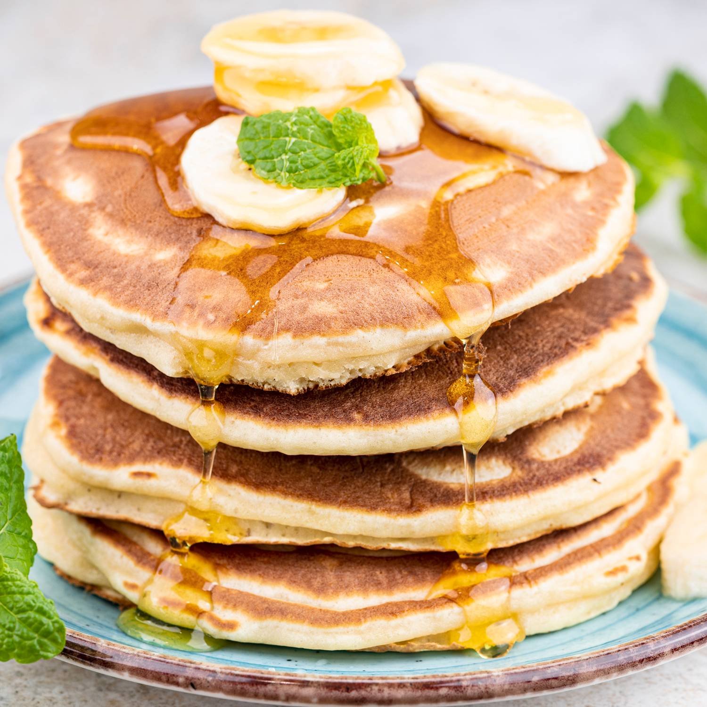

Pancakes

This homemade pancake recipe, adapted from
The New York Times Cookbook by Craig Claiborne,
has been a beloved staple in my kitchen since my
kids were little, and for good reason. Made with
ingredients I always have hand — like flour, baking
powder, sugar, salt, milk, eggs, and butter — the
pancakes have the perfect texture: fluffy on the
inside and crispy on the outside.
Ingredients:
- milk
- baking powder
- flour
- sugar & salt
- eggs
- melted butter
- oil